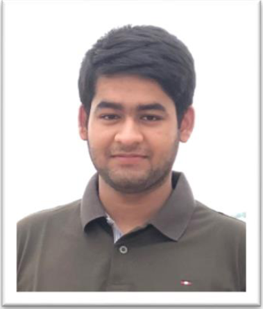

CURRICULUM VITAE
|
|
MD AL MUZAHID NAYIMB.Sc. Engineer (CSE)Contact No: 01786463542E-mail: almuzahidniem@gmail.com
|

|
CAREER OBJECTIVE
|
|
To utilize my knowledge and skill, utilize given opportunity for professional growth and to contribute in the best possible way for the betterment of the organization and self.
|
PERSONAL DETAILS
|
|
Name: MD AL MUZAHID NAYIM
Address: Plot# 412, Road# 3, Block H, Bashundhara R-A, Dhaka
Email: almuzahidniem@gmail.com
Phone: 01786463542
Nationality: Bangladeshi
Date of Birth: 21 July 1997
|
ACADEMIC QUALIFICATIONS
|
- Bachelor of Science (B.Sc.) in Computer Science and Engineering (4 years)
Institution: American International University-Bangladesh (AIUB)
Department: Computer Science and Engineering
CGPA: 3.9 (Out of 4.00), Dean’s List all Semesters
Year of Pass: 2021
- Higher Secondary Certificate (H.S.C) (2 years)
Institution: Kalaroa Govt. College.
Board: Jessor
Group: Science
GPA: 5.00 (out of 5.00)
Year of Pass: 2017
-
Secondary School Certificate (S.S.C) (10 years)
Institution: Kalaroa Govt. Model Pilot High School.
Board: Jessor
Group: Science
GPA: 5.00 (Out of 5.00)
Year of Pass: 2015
|
TECHNICAL SKILLS
|
- Language: C, C++, C#, JAVA, Assembly
- MarkUp & Scripting Language: HTML, CSS, PHP, javascript
- Tools & IDE: Eclipse, Net Beans
- Database: Oracle, MySQL
- Software: MATLAB, NI Multisim, Proteus, Auto CAD, Code Blocks, Visual Studio, Arduino IDE
- Application Programs: Microsoft Word, Microsoft Excel, Microsoft Office, Microsoft PowerPoint
|
INTERNSHIP
|
- Project: Training and Internship program on Database (Oracle and SQL Server) with industrial attachment.
- Organization: Oracle
|
FINAL PROJECT/THESIS
|
- Project : IOT based car parking
Aim of this project was to create an automated parking system based on the availability of space in parking lot for management of parking problems.
|
INTEREST
|
- Travelling
- Playing Badminton
|
REFERANCES
|
|
DR. A F M Saifuddin Saif
Senior Assistant Professor
Department of Computer Science
American International University-Bangladesh
E-mail: saif@aiub.edu
S. M. Abdur Bhuiyan Rouf
Assistant Professor
Department of Computer Science
American International University-Bangladesh
E-mail: arouf@aiub.edu
|